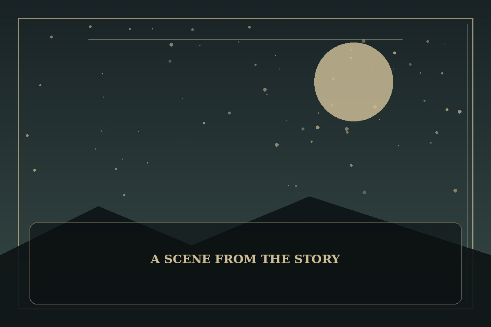

The Swordmaster’s Son
Synopsis
Born into a powerful sword-wielding family, a young heir must confront expectations that threaten to define his entire life. Skill may earn respect, but character determines what kind of legacy survives.
Chapter 1: The Blade in the Family Vault
The family vault held swords polished to mirror brightness, each one attached to a story about victory. At the back, beneath a cloth no one bothered to dust, rested a plain blade without a name.
Tarin chose that sword for his first formal test, ignoring the ceremonial weapon his relatives had selected. His father called it an insult to their ancestors. Tarin answered that he wanted to know why the unnamed blade had been hidden while lesser swords were praised.
The old armorer revealed that the plain blade had belonged to a guardian who refused to strike a defeated opponent. Tarin carried it into the courtyard, not to reject his family but to ask it a harder question: was their legacy the victories they celebrated, or the lives they chose to spare?

This fan-made sample is an original piece created for a student website project; it is not an official chapter of The Swordmaster’s Son.